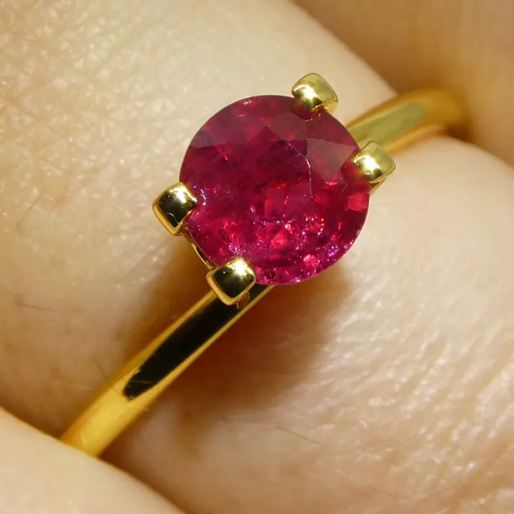
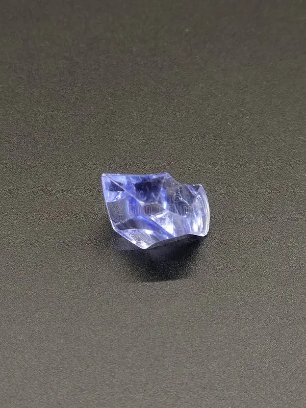

紅藍寶石總論：剛玉家族的兩位巨星
紅寶石與藍寶石看起來天差地遠，骨子裡卻是同一種礦物——剛玉（Corundum）。兩者的差別，只是一個叫「鉻」的微量元素混進去的多寡而已。


核心定義
剛玉（Corundum）是化學式為 Al₂O₃（氧化鋁）的礦物，莫氏硬度 9，僅次於鑽石。在寶石學的世界裡，規矩非常簡單粗暴：紅色的剛玉叫做紅寶石（Ruby），其餘所有顏色——藍、粉、黃、綠、紫、無色——一律叫藍寶石（Sapphire）。所以「粉紅藍寶石」不是粉紅色的藍寶石，而是「粉紅色的剛玉」；這聽起來很矛盾，卻是全球寶石學界的統一語言。
GIA 的官方定義正是如此：紅寶石是剛玉礦物中唯一被單獨命名的紅色變種，而藍寶石涵蓋紅色以外的所有剛玉（GIA Ruby）。
特徵與分類
| 成員 | 顏色 | 致色元素 | 代表品種 |
|---|---|---|---|
| 紅寶石 Ruby | 紅～紫紅 | 鉻（Cr） | 鴿血紅、緬甸紅 |
| 藍寶石 Sapphire | 紅以外所有色 | 鐵＋鈦（藍）、釩（紫）、鐵（黃） | 皇家藍、矢車菊藍、帕帕拉恰 |
| 特殊效應 | — | 針狀金紅石排列 | 星光紅寶、星光藍寶 |
剛玉家族還有一項其他寶石少見的天賦：星光效應（Asterism）。當寶石內部有定向排列的針狀金紅石包裹體，切成蛋面後會浮現六道星芒——詳見 星光效應專文。
科學原理
純淨的剛玉其實是無色透明的。顏色來自晶格中的微量雜質：鉻（Cr）取代鋁的位置，讓寶石吸收黃綠色光、反射紅色光，於是出現紅寶石；鐵（Fe）與鈦（Ti）的組合則吸收紅色端光譜，產生經典的藍色。含量差個千分之一，價格可以差上十倍——大自然最貴的「配方」往往只差幾個原子。
也因為硬度高達 9，紅藍寶石極耐佩戴，是僅次於鑽石的「耐磨第二把交椅」；但要注意，硬度高不代表摔不破，解理與裂隙依然是它的弱點。
鑑定與鑑別方法
- 看顏色分佈：天然紅寶石常有色帶，且顏色不均；均勻得像假的一樣時，反而要先懷疑合成。
- 找包裹體：針狀金紅石絲、色帶、指紋狀包體是天然與否的重要線索；合成寶石常見彎曲生長紋或氣泡。
- 測折射率：剛玉折射率約 1.76–1.77，雙折射微弱；折射儀可快速排除多數仿品。
- 紫外燈觀察：多數紅寶石在長波紫外燈下呈紅色螢光——緬甸紅寶尤其明顯，這也與致色的鉻有關。
- 送實驗室：是否加熱、有無充填、產地判斷，最終以 GIA、SSEF、Gübelin 等報告為準。
常見誤區
不完全是。頂級緬甸鴿血紅確實屢創天價，但稀有度與價格要看品質與產地：極品皇家藍藍寶石與矢車菊藍藍寶石同樣能破百萬美元，甚至頂級帕帕拉恰的單克拉價常常超越多數紅寶石。
剛玉也很常見於工業用途（砂紙、軸承全靠它的硬度）。寶石級的要求是「透明、色美、少裂」；一顆十克拉但裂到透光的剛玉，價值遠不如一顆晶瑩的一克拉鴿血紅。
冷知識
其實古希臘人叫它 sappheiros，指的是「藍色的石頭」，但當時這個詞多半用在青金石（Lapis Lazuli）上——古人把兩種藍色寶石的名字混用了好幾個世紀。
寶石學界對「多紅才算紅寶石」至今沒有全球統一的嚴格數字，GIA 以「紅色是否為主色調」來判斷；同樣一顆石頭，在美國與在歐洲可能被分到不同名字——這就是帕帕拉恰顏色之爭的縮影。
反直覺觀點
很多人以為「處理過 = 假貨」，但寶石學上的「天然」指的是礦物來源，而非是否加工。九成以上的市售紅藍寶石都經過加熱，加熱只是把原本的顏色「催出來」，讓平庸變漂亮——它仍是天然剛玉，只是被明說「有加熱」後，價格會打個折。真正要防的是玻璃充填與擴散處理，那是另一層次的問題（見 熱處理 vs 無燒 與 玻璃充填紅寶石）。
市場行情與保養建議
行情按品質與產地差異極大（僅供參考，非投資建議）：加熱紅寶石每克拉約新台幣 1–10 萬元；無燒緬甸鴿血紅每克拉可達 30–100 萬元以上，莫三比克優質無燒紅寶也常突破每克拉 10–20 萬元。藍寶石相對親民，1–3 克拉品質佳的斯里蘭卡皇家藍約新台幣 2–15 萬元。
保養重點：紅藍寶石怕撞擊（裂隙可能擴大）、怕超音波清洗機長時間震盪（有裂者勿用）、怕高溫與漂白水。日常用溫肥皂水軟毛刷清潔即可；無燒高價品建議送專業實驗室定期檢查鑲爪。